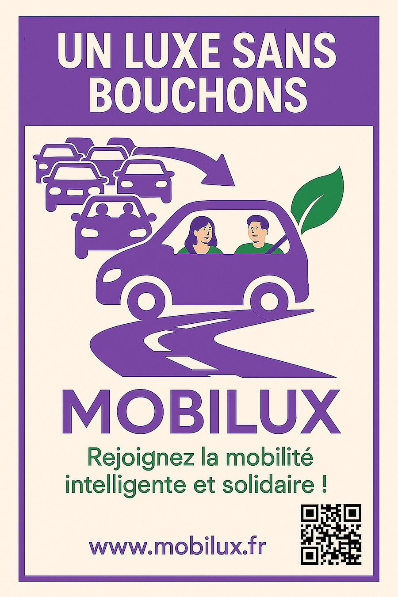
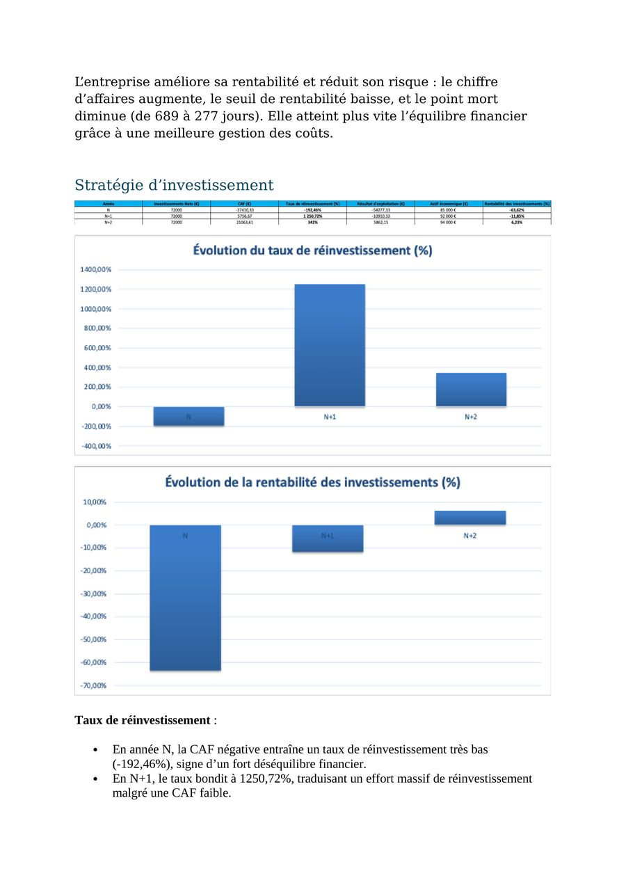
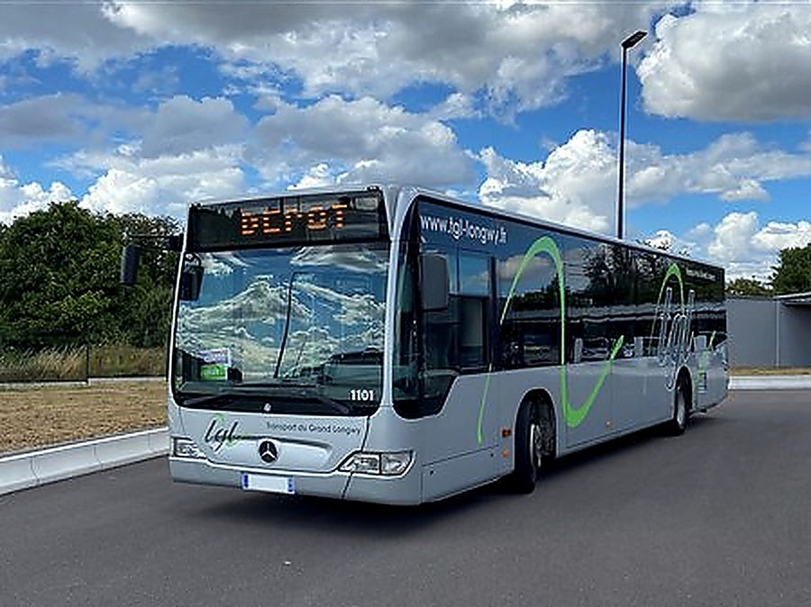
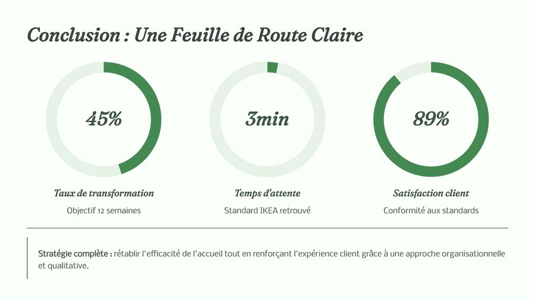
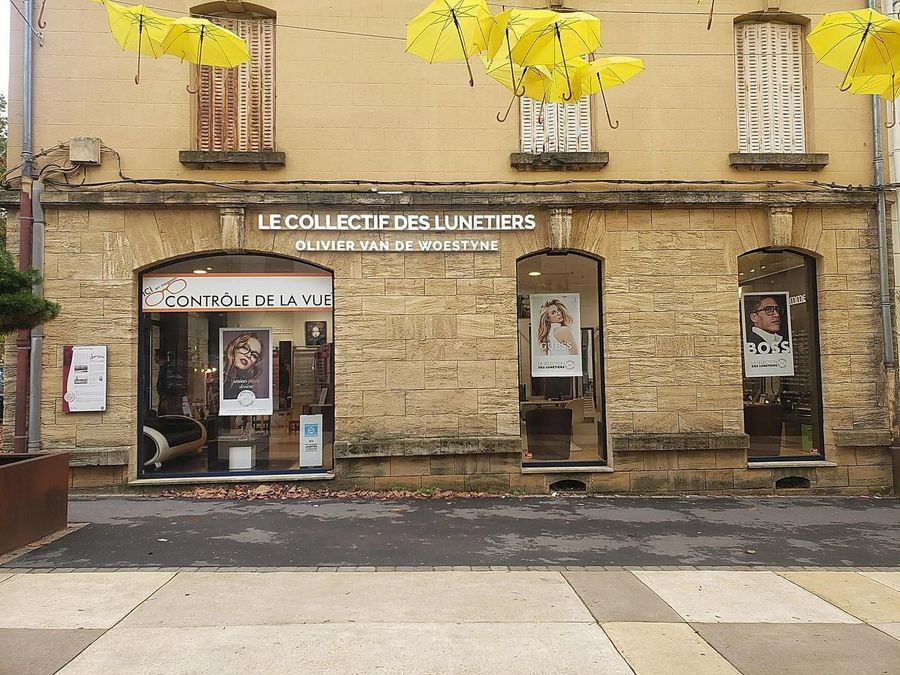

Douze projets, douze terrains réels.
De l’analyse d’une papeterie industrielle à la création d’une compagnie aérienne fictive, en passant par une plateforme de covoiturage transfrontalier et le plan de transformation numérique d’un réseau de transport public. Filtrez par année pour suivre la progression.

Sofidel — situer une organisation
Décrire l’environnement d’une entreprise et identifier l’enjeu majeur auquel elle devra faire face.
Voir l’étude de cas
BIONATURE — créer une entreprise fictive
Création d’une entreprise fictive et simulation de ses résultats sur un an : bilan et compte de résultat prévisionnels.
Voir l’étude de cas
Posture professionnelle — identifier ses qualités
Travail sur les vingt soft skills et construction d’une posture professionnelle adaptée au monde du travail.
Voir l’étude de cas
Louez-Le — Business Game
Coopération en équipe autour d’un projet de location, avec production de supports de communication.
Voir l’étude de casMondlyCulture — créer une entreprise
Application mobile d’apprentissage immersif des langues couplé à la découverte des cultures étrangères.
Voir l’étude de cas
Hôtel du Nord — développer une activité
Diagnostic stratégique complet et propositions de développement pour un hôtel 3 étoiles de Longwy.
Voir l’étude de cas
MOBILUX — l’économie sociale et solidaire
Plateforme de covoiturage intelligent pour les 120 000 travailleurs frontaliers du Pays-Haut.
Voir l’étude de cas
Business plan — vérifier la faisabilité
Modélisation financière complète d’un projet entrepreneurial sur cinq ans, en travail individuel.
Voir l’étude de cas
Transport du Grand Longwy — transformation numérique
Diagnostic et plan de transformation numérique d’un réseau de transport public transfrontalier.
Voir l’étude de cas
Quatre cas — encadrer une équipe
Immobilier, Decathlon, IKEA et Maison Le Minor : quatre études de cas sur le management d’équipe.
Voir l’étude de cas
Le Collectif des Lunetiers — accompagner le changement
Audit territorial et pivot stratégique pour un opticien indépendant du centre-ville de Longwy.
Voir l’étude de casAura Airlines — piloter l’e-réputation
Création d’une compagnie aérienne premium fictive et gestion complète de son image en ligne.
Voir l’étude de cas